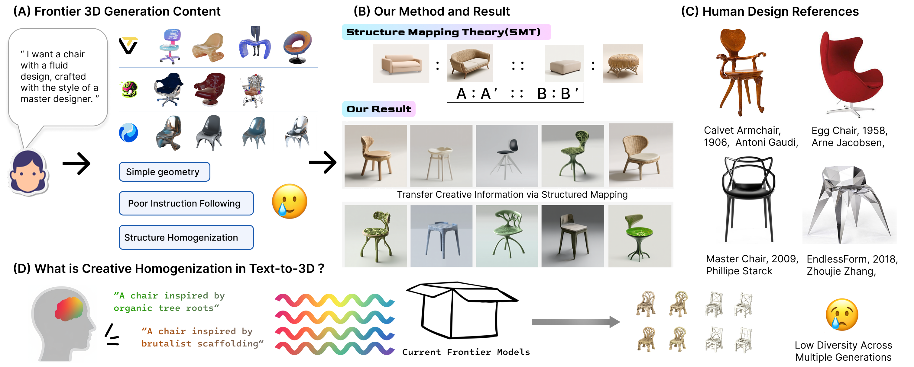
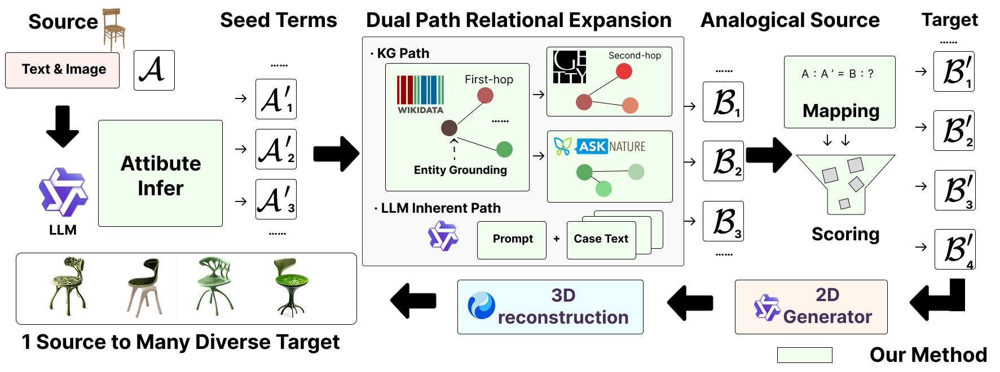
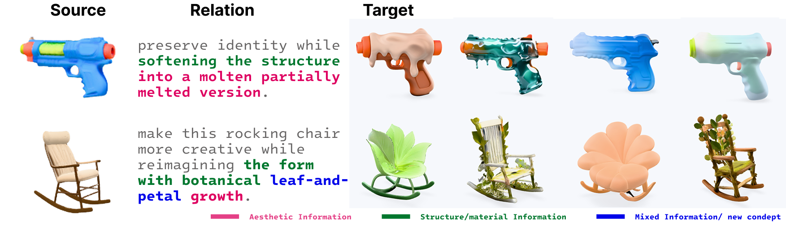
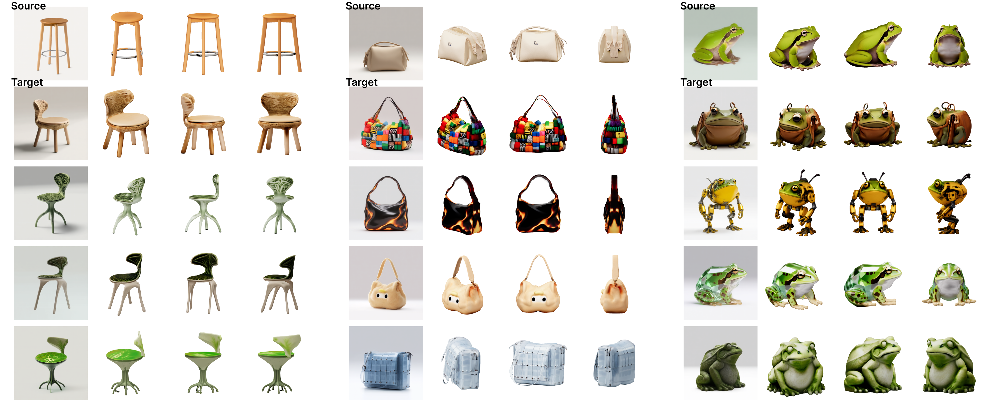

Attribute inference
An LLM identifies transferable parts and attributes across function, material, structure, visuals, and affordances.
Tongji University · Adobe Research
Open-ended text-to-3D prompts often lead to similar shapes. CreativeFlow uses analogical divergent thinking to turn a single source asset into multiple designs with distinct geometry. Explicit relations guide the transfer of structure, function, material, and aesthetics while keeping the source recognizable.

The framework models a proportional analogy: A : A′ :: B : B′. A source asset and its attributes are connected to an analogical concept and the attributes that can be transferred back into a new design.
An LLM identifies transferable parts and attributes across function, material, structure, visuals, and affordances.
Knowledge graph retrieval uses Wikidata, Getty AAT, and AskNature. A second path draws on the LLM’s internal associations to expand possible analogical concepts.
Candidate mappings are filtered for semantic novelty, 3D feasibility, and structural transferability. Part-level instructions guide 2D visual priors and 3D reconstruction.

Each source expands into 5–10 aesthetic and structural relations. For example, relating a chair’s support frame to coral’s branching structure transfers a concrete geometric principle into the target design.


Two expert studies compared matched prompts against Hunyuan3D-2, TRELLIS-2, and SF3D using five-point scales.
Mean score for retaining a recognizable source identity.
Mean score for creative novelty in the identity-preservation and novelty study.
Ten design experts rated CreativeFlow at 3.31, compared with 2.84 for the strongest baseline.
These preliminary findings support the framework’s potential for novel, recognizable, and visually engaging 3D design.
Future work will develop evaluation metrics for generative creativity and analogical structural rationality, build a large-scale source–relation–target dataset, and explore interactive tools for collaborative human–AI ideation.
Content and figures adapted from CreativeFlow, arXiv:2610.05167v1 (CC BY 4.0).